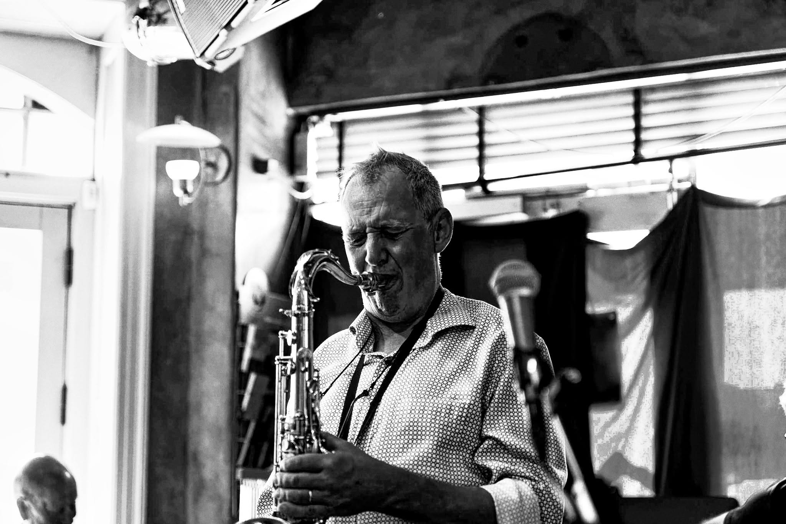
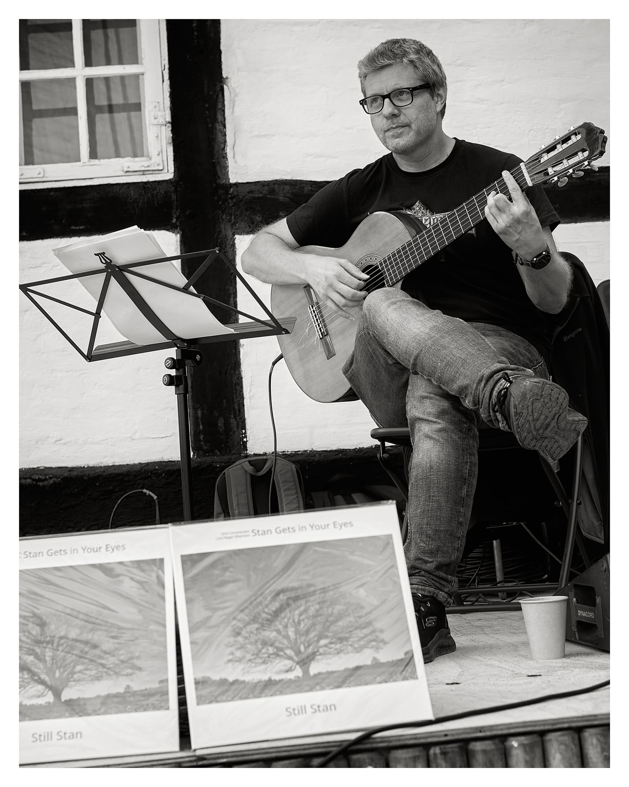
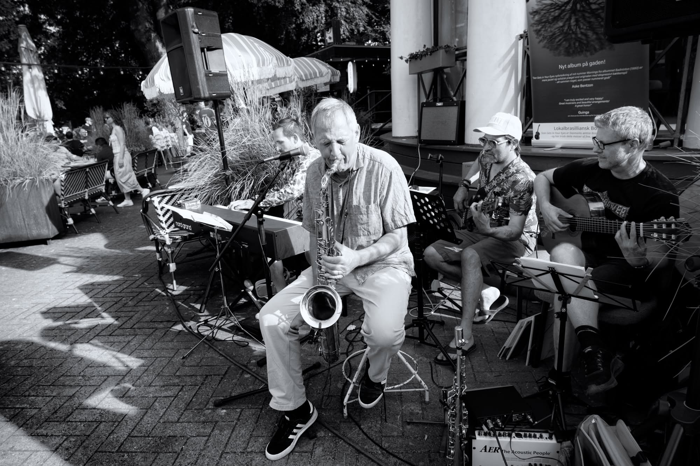
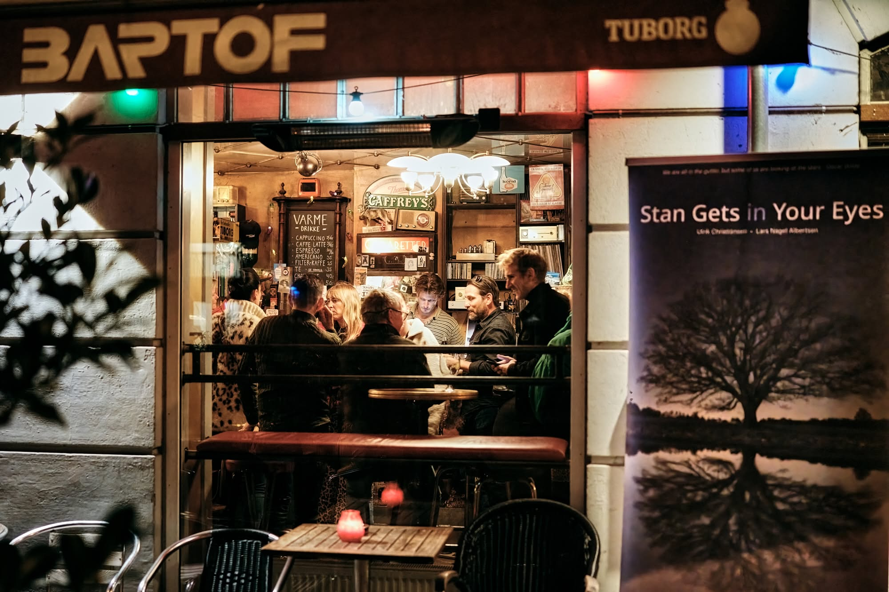
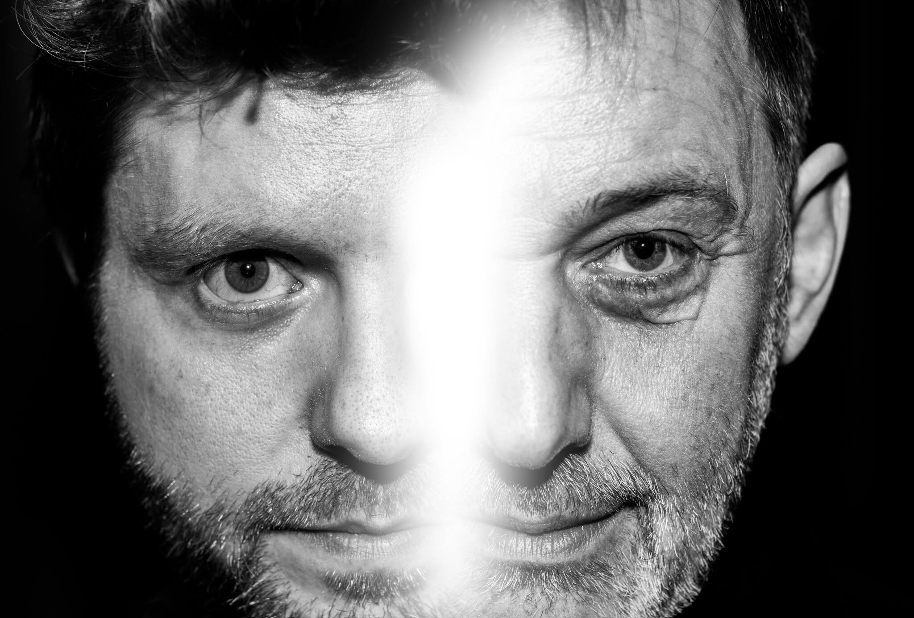
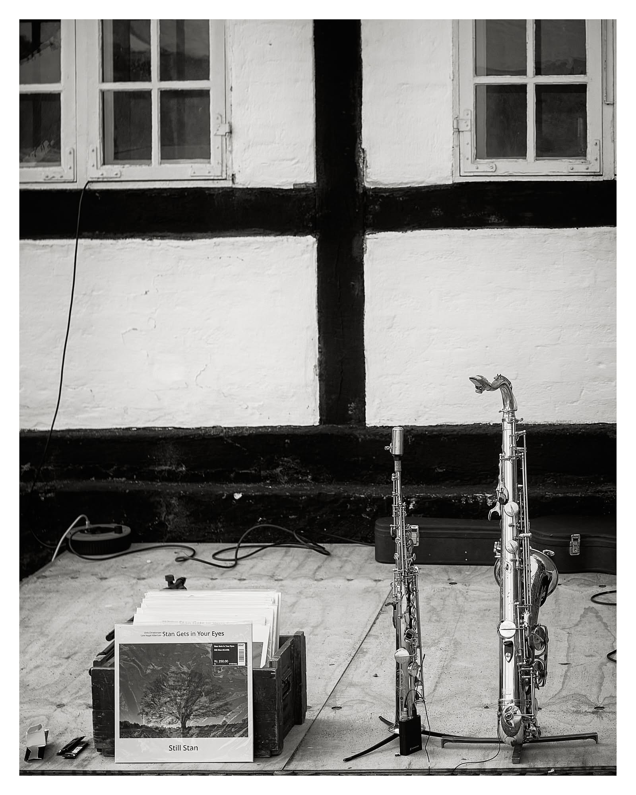
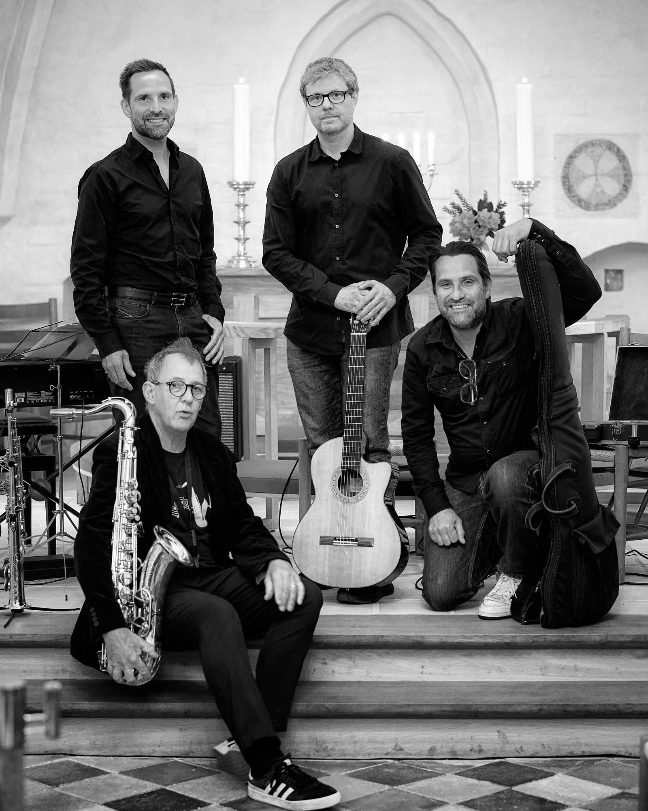

Musik
Lyt med på Spotify.
Billeder
Fra scenen og bagom.






Kommende koncerter
Opdateres automatisk fra koncertlisten — se README for hvordan.
- henter koncerter…

Danmarks ældste Bossa Nova-orkester — debuterede ved Copenhagen Jazzfestival i 1986, og er mere aktuelle end nogensinde.
se kommende koncerter ↓Lyt med på Spotify.
Fra scenen og bagom.






Opdateres automatisk fra koncertlisten — se README for hvordan.